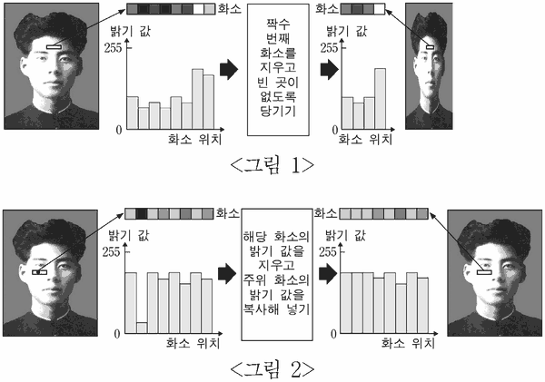

디지털 영상 처리
지문을 먼저 읽고, 이해가 막히는 문단에서 ‘그림으로 보기’를 누르세요. 그림은 문단을 따라 바뀝니다.
1문단누구나 좀 더 멋있게 보이고 싶은 소망을 가지고 있을 것이다. 이러한 꿈은 적어도 디지털 사진 속에서라면 쉽게 이룰 수 있다. 영상 편집 소프트웨어를 사용하면 실제 모습보다 날씬해 보이도록 할 수도 있고 주근깨를 지워서 달리 보이게 할 수도 있다. 이러한 일은 대부분 디지털 영상 처리라는 기술에 바탕을 두고 있다.
2문단디지털 카메라로 촬영한 영상은 컴퓨터 안에서 영상을 구성하는 점인 수많은 화소의 집합으로 저장되고, 각각의 화소는 숫자로 표현된 밝기 값과 색상 값을 가진다. ㉠일반적으로 디지털 영상 처리란 각 화소의 밝기 값과 색상 값에 일정한 규칙을 적용하여 영상의 밝기와 색상은 물론 크기, 모양, 질감까지도 변화시키는 기술을 말한다.
3문단설명을 간단하게 하기 위해서 8비트 해상도, 즉 0부터 255까지의 밝기 값만 가지는 흑백 영상이 있다고 하자. 이때 밝기 값 0은 완전한 검은색이고 255는 완전한 흰색이 된다. 날씬하게 보이게 하기 위해서 영상의 세로는 그대로 두고 가로를 1/2 크기로 줄이려면 <그림 1>과 같이 홀수 번째 화소는 그대로 두고 짝수 번째 화소를 없앤 다음, 빈 곳이 없도록 왼쪽으로 당기면 된다. 또 검은 점으로 표시된 주근깨를 지우고 싶다면 <그림 2>와 같이 해당 화소의 밝기 값을 지우고, 지운 자리에 주위에 있는 화소의 밝기 값을 복사해 넣는다. 이렇게 하면 주위 화소와 차이가 나던 검은 점이 주위와 똑같은 밝기 값을 가지게 되어 주근깨가 없어진다.

4문단디지털 영상 처리는 간단한 규칙을 적용하는 것만으로도 여러 가지 효과를 얻을 수 있다. 영상에 있는 붉은색 사과를 초록색으로 칠하고 싶다면 사과에 해당하는 모든 화소에서 밝기 값은 그대로 두고 붉은색 색상 값을 초록색 색상 값으로 바꿔주면 된다. 뱀의 영상에 머리를 하나 더 달아서 머리가 두 개인 괴물 뱀을 만들고 싶다면 어떻게 해야 할까? 이 경우에는 머리를 추가하고 싶은 부분에 해당하는 화소의 밝기 값과 색상 값을 지운 다음, 원래 영상에서 뱀의 머리 부분에 해당하는 화소의 밝기 값과 색상 값을 복사해 넣으면 된다.
5문단디지털 영상 처리는 군사 목적에서 과학 수사에까지 다양한 분야에 널리 적용된다. ㉡첩보 위성이 찍은 어떤 영상은 화소의 밝기 값이 0에 가까워 어둡고, 밝기 값의 차이가 별로 없어선명하지도 않지만, 이 기술을 적용하면 밝고 선명한 영상을얻을 수 있다. 과학 수사 요원이 범인의 희미한 지문만을 채취하고도 회심의 미소를 지을 수 있는 것도 이 기술을 믿기 때문이다. 하지만 디지털 영상 처리 소프트웨어가 일반화되면서 발생하기 시작한 위·변조 등을 방지하는 일은 앞으로 남겨진 시급한 과제라 할 수 있다.